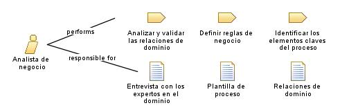

| Role: Analista de negocio |
 |
|
Relationships
 |
||
| Primary Performs | ||
|---|---|---|
| Additionally Performs | ||
| Modifies |
|
|
Main Description
|
Es responsable de documentar el proceso inicial para la creación del modulo de facturación y contabilidad. Esto implica recopilar información sobre las actividades, los flujos de trabajo, los actores involucrados y las reglas de negocio relacionadas, trabaja en colaboración con los interesados, recopilará y documentará los requisitos específicos del negocio, i dentificará áreas de mejora y propondrá soluciones para optimizar los procesos.
|
Staffing
| Skills | calidad de liderazgo, toma de desiciones, comunicación, analisis y organización |
|---|---|
| Synonyms | Business Analyst |